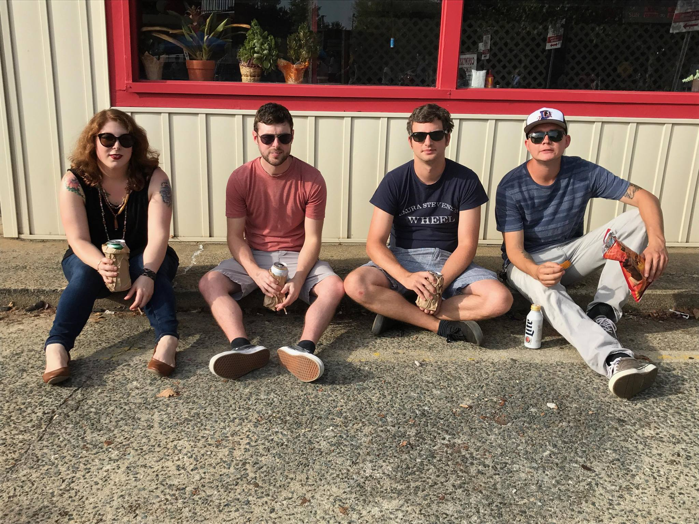

Drew Johnson
DRUMMER, PERCUSSIONIST AND EDUCATOR
Drew Johnson is from Hickory, NC and currently resides in Raleigh, NC. His studies of music, drums and perscussion began at the age of 13 and has continued throughout his professional carreer to this day. Genres such as jazz, fusion, funk and rock are at the foundation of his musical style. Influenced by drummers such as John Bonham, Mike Clark, Elvin Jones and Tony Williams, Drew has developed a versitile sound sought after in the music industry.
Outside of music, Drew enjoys spending time with his family and friends. Whether it be woodworking, painting, vehicle maintenance or mountain biking, pursuing passions and taking time to admire the beauty of everyday life is the goal.
PROJECTS
Andrew Wilco's American Band
Drew is the current drummer and founding member of Andrew Wilco's American Band. Listen to them on Spotify and Bandcamp.
EXPERIENCE
As a Performer
Andrew Wilco's American Band
Pan Jive Steel Drum Band
Western Piedmont Symphony
Buzz City Brass
Rah's Illuminated Ones
The Marcel Portilla Band
As an Educator
Music and Arts Drumset Instructor
Drumline and Pit Director/Judge
NC All County Percussion Judge
Piedmont Percussion Program assistant Director
EDUCATION
University of North Carolina - Charlotte
Bachelor of Arts - Music, 2012